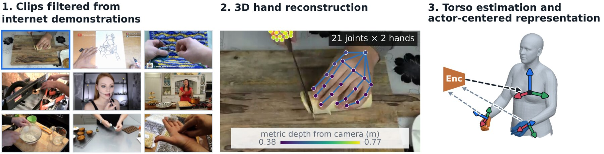
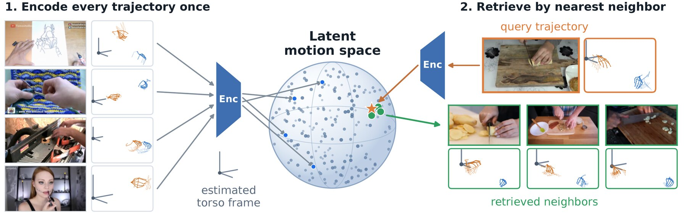

RoboTok
A Scalable Data Engine for Internet Demonstration Video
Retrieval and Dexterous Manipulation Learning
1Rice University · 2NVIDIA
A Scalable Data Engine for Internet Demonstration Video
Retrieval and Dexterous Manipulation Learning
1Rice University · 2NVIDIA
Robot learning increasingly depends on broad and diverse demonstrations, yet collecting robot data remains expensive and difficult to scale across the wide range of real-world tasks. To address this bottleneck, we introduce RoboTok, a scalable data engine that uses a query human manipulation video to retrieve manipulation-relevant internet demonstrations for training dexterous robot policies. Specifically, we learn a latent motion space from 3D hand trajectories expressed in estimated actor-centered reference frames. This representation enables manipulation behaviors to be compared across variations in camera viewpoint, scene appearance, and actor occlusions, while remaining compact enough for efficient indexing and retrieval over internet video collections. We evaluate RoboTok against existing robot-data retrieval approaches using retrieval metrics and downstream robot policy performance, showing that RoboTok retrieves more manipulation-relevant demonstrations and improves downstream task success. In real-world robot experiments, RoboTok-guided policies achieve a mean success improvement of 42.2 percentage points over the strongest baseline for each task, establishing hand-pose trajectory-aware retrieval as a scalable way to leverage continuously growing web video for robot learning.
RoboTok converts internet human demonstration videos into torso-relative 3D hand trajectories and learns a compact embedding supervised by DTW-based motion similarity. This representation enables manipulation behaviors to be compared across variations in camera viewpoint, scene appearance, and actor occlusions. At query time, cosine-similarity search retrieves related manipulation demonstrations without computing DTW over the full corpus.
Internet videos → Clip filtering → Data extraction → Hand motion-based retrieval → Robot policy training


Unlike appearance-based retrieval methods, RoboTok retrieves video clips with similar hand-pose trajectories across different activities, scenes, and camera viewpoints. We use a trained model to estimate a human torso-centered reference frame using only the 3D hand trajectory, which is effective even when the actor is not directly visible.
10 example query videos and their corresponding retrieved videos per method are shown below. An interactive viewer of extracted actor-centered 3D hand trajectories is also provided. Only RoboTok uses the canonicalized 3D hand trajectories for retrieval.
Using canonicalized 3D hand trajectories, RoboTok retrieves manipulation demonstrations on both the in-domain RoboTok evaluation corpus and the out-of-domain AssemblyHands [1] corpus, outperforming all evaluated retrieval baselines across every reported metric.
| Method | Internet Video (Neval = 10,000, @k = 10) |
AssemblyHands [1] (NAH = 831, @k = 5) |
||||
|---|---|---|---|---|---|---|
| mAP ↑ [6] | nDCG ↑ [7] | DTW cost (m) ↓ [8] | mAP ↑ [6] | nDCG ↑ [7] | DTW cost (m) ↓ [8] | |
| Random | 0.000 | 0.000 | 4.778 | 0.003 | 0.004 | 1.911 |
| Flow (CoRL 2024) [3] | 0.001 | 0.002 | 6.795 | 0.013 | 0.026 | 1.850 |
| HAND (ICRA 2026) [4] | 0.001 | 0.004 | 4.508 | 0.021 | 0.043 | 1.830 |
| STRAP (ICLR 2025) [5] | 0.010 | 0.028 | 3.901 | 0.133 | 0.229 | 1.304 |
| RoboTok | 0.336 | 0.534 | 1.245 | 0.261 | 0.387 | 1.095 |
| Exact DTW | 1.000 | 1.000 | 1.069 | 1.000 | 1.000 | 0.966 |
RoboTok-retrieved demonstrations help robot policies learn to complete simulation tasks more successfully than demonstrations retrieved by baseline methods. The evaluation rollout videos below compare the resulting policy behaviors. Only proprioception is used as input.
Two cameras are provided to show rollouts from different angles, but are not used as inputs to policies.
RoboTok-guided policies achieve the highest success rates on all three modified VTDexManip [2] tasks, on both seen and unseen objects. Tasks are modified to be larger exploration problems by unrestricting hand motion in 3D space and sparsifying task rewards.
| Tasks | Split | Base | Random | Flow (CoRL 2024) [3] | HAND (ICRA 2026) [4] | STRAP (ICLR 2025) [5] | RoboTok |
|---|---|---|---|---|---|---|---|
| BottleCap Turning | Seen | 0.1±0.1 | 0.2±0.1 | 1.9±1.8 | 59.5±9.0 | 59.0±7.3 | 77.3±3.5 |
| Unseen | 0.0±0.0 | 0.1±0.1 | 0.0±0.0 | 27.0±6.0 | 25.0±5.9 | 38.1±5.5 | |
| Faucet Screwing | Seen | 1.0±0.6 | 5.3±4.8 | 0.0±0.0 | 6.8±4.8 | 0.0±0.0 | 44.8±4.1 |
| Unseen | 1.7±1.7 | 1.0±1.0 | 0.3±0.3 | 2.6±1.7 | 0.0±0.0 | 10.9±2.8 | |
| Lever Sliding | Seen | 0.8±0.3 | 17.2±6.8 | 14.4±7.3 | 19.5±4.8 | 8.4±4.1 | 79.3±5.3 |
| Unseen | 2.1±2.1 | 18.8±11.9 | 19.6±12.2 | 25.2±11.8 | 6.5±3.4 | 58.3±7.5 |
Real-robot rollouts for the three tasks, each with three object variants. Policies guided by RoboTok are compared with policies guided by HAND [4] and STRAP [5], the two best baselines from simulation. Every clip is captured from a fixed camera; bottle-cap and faucet clips are full episodes, and lever clips run from the grasp until the hand lifts away.
Smooth black tape is added to help see object motions and does not help with task completion.
@article{qian2026robotok,
title = {RoboTok: A Scalable Data Engine for Internet Demonstration
Video Retrieval and Dexterous Manipulation Learning},
author = {Qian, Howard and Chen, Yiting and Xie, Yunfei and
Ren, Kejia and Chanrungmaneekul, Podshara and Wang, Gaotian and
Wen, Bowen and Wei, Chen and Hang, Kaiyu},
journal = {arXiv preprint arXiv:2609.03199},
year = {2026}
}